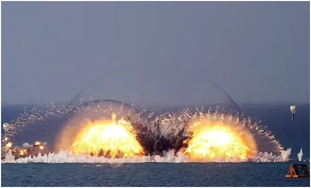

Bomba hiperbaryczna
Bomby hiperbaryczne, niestety są używane przez wszystkie duże armie świata. Historia rozwoju ludzkości to historia rozwoju technik walki, militariów. Prze tysiące lat dominowały rożne machiny do miotania dużych kamieni. W połowie XV wieku Konstantynopol padł po ostrzale z wielkich dział prochowych. W wieku XX wraz z rozwojem chemii i lotnictwa stworzono mnóstwo skutecznych technik zabijania.
Bomba hiperbaryczna nazywana jest też bombą próżniową z powodu wykorzystania niszczycielskiej siły spadku ciśnienia. Gdy wybucha zwykła bomba, np. granat, to garść materiału wybuchowego spala się z wielką szybkością, punktowy wzrost temperatury powoduje wzrost ciśnienia w tym miejscu. To generuje podmuch mogący kruszyć skały i beton, klasyka. Jeśli schowamy się za grubą ścianą, w piwnicy itp. ten podmuch nas nie zabije. A jak walczyć z ludźmi w piwnicach , jaskiniach, itp. Trzeba ich najprościej stamtąd wyssać. Pozornie to skomplikowane zadanie, ale nie dla fizyków.

Bomba hiperbaryczna to zbiornik z bardzo łatwo palną cieczą. Początek procesu to pierwsza eksplozja, która rozpyla taką ciesz na dużym terenie, nawet setki metrów. W ułamku sekundy seria małych wybuchów zapala taką chmurę. Robi się gorąco i fala ciśnienia, jak mały grzyb atomowy, rozchodzi się po okolicy niszcząc wszytko, co napotka, ale to dopiero połowa procesu. Po spaleniu się tego obłoku na całym terenie znika tlen, powstaje w tym miejscu bańka o bardzo niskim ciśnieniu. Przez ułamek sekundy ciśnienie spada tak bardzo, że dosłownie przez dziurki od klucza ten stan dociera do każdej przestrzeni w zasięgu rażenia. Człowiek jest rozrywany swym wewnętrznym ciśnieniem układu krążenia. To jakby na chwilę trafić w otwarty kosmos bez skafandra.
Nie ma fajnych wojen.
Paweł Klimczewski
Zdjęcie z https://www.ntv.com.tr/galeri/dunya/ukrayna-rusyanin-termobarik-silahlarla-saldirdigini-acikladi-vakum-bombasi-nedir-vakum-bombasi-ne-kadar-guclu,nfPbY-mQ-kqAM8OeIZNkRA/E7EFq1h3IEeZO9cfLmcS5g